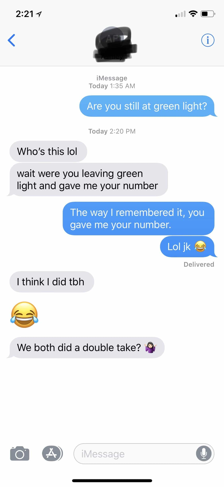
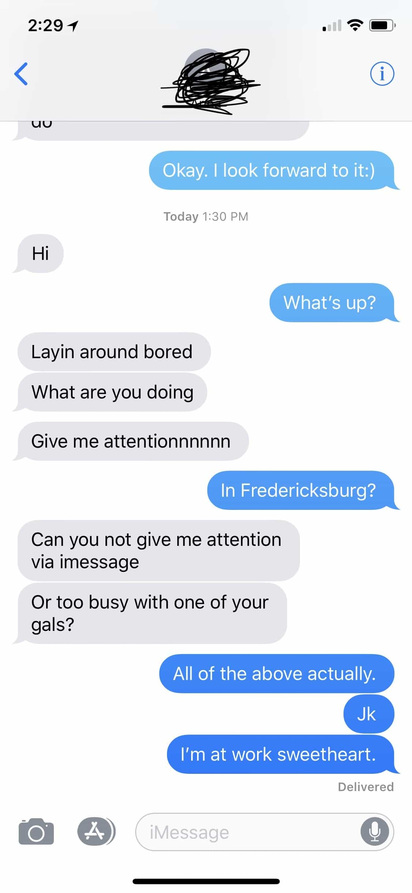

The art of text game has to be one of the most contentious subjects around. Various so-called experts will advocate for one strategy, while other so-called experts will preach another. All of the conflicting doctrine can be highly frustrating for someone who is in search for a reliable gospel.
While there are certainly text messaging do’s and don’t’s, when it is all said-and-done, text game is not all that black and white. The obvious axioms of not texting too much, not excessively validating the girl and so-forth still hold true, but many situations require a case-by-case approach. Below are a two real life examples that showcase some of the different strategies I use when texting a girl.
1. Keep it light, Keep It Flirty, Keep It Alpha

The “Lol Jk” response was probably not necessary. I was tipsy though.
There is a sizable contingent of men in the manosphere who believe in order to be successful with women you have to be a frosty, no-nonsense, dark-triad , Tyler Durden ( Fight Club) type of character. While adopting some of these characteristics can be beneficial, a lot of men struggle to find a happy medium, especially one that is congruent with their identity. Most men are too submissive and needy which unequivocally decreases sexual attraction. The other side of the coin is being so brash and disagreeable that you actually become off-putting to the opposite sex.
I am a proponent for being self-assured, unflappable, direct, but approachable and disarming. This is most easily achieved through your actions, but can also be conveyed through text. In the example above, you can see that I inquired if the girl I had just met was still at the bar (this was roughly an hour after I got her number by cold-approach).
Her response was “who’s this”, which is a common hot-girl response to an unknown number. This broad happened to be a solid 8.5. Early on in the interaction she was glued to her phone. I could sense she had a host of eager beta males lurking in the fringes, waiting for their shot to pounce.
The women you encounter, particularly the higher value ones, are going to attempt to throw you off your game in order to test your resolve. In order to succeed you’ll need to have an answer for these cheap gimmicks. As you can see from the next response, she reveals her hand to me. She knew it was me who texted her, but instead she decided to play coy.
The second text message she sent me, “Wait were you leaving green light and gave me your number,” is a seemingly harmless response for most, but when you truly adopt an entitled give-no-fucks disposition, you’ll recognize the indignity of such a statement. She obviously remembered who I was and tried to pretend like I forced my number onto her. This is a subtle shit-test and a common strategy women will employ to quickly appraise a man’s value and to establish the “I am the prize” dynamic.
In my response, instead of going along with it, I re-frame the interaction and insisted it was her who sought after my number. Shit test passed. My witty, yet confident response conveyed to her that I have high self-worth and I don’t take myself too seriously, a stark contrast from the typical soy boy type she is accustomed to dealing with.
The reward for my unorthodox response—an admission of interest; “i think i did tbh” and some validation, “we both did the double take”. As you can see, a little fuck-boy-confidence and some ingenuity can pierce through a woman’s bitch-shield.
2. Give Her The Gift Of Missing You

Never get relegated to the pathetic text-buddy status.
When it comes to texting a female, it is my contention that less-is-more. The most optimal dynamic to fashion is one in which the woman is texting you more than you are texting her. This may sound rudimentary to some, but the reality is, most men text way too much and therefore never attain this dynamic.
When you text a woman profusely, not only are you pedestalizing her, you are acknowledging to her that you are a low-status male with few options and way too much free time on your hands. Texting should be used as a medium to create attraction and schedule meet-ups—not to have meaningless and sterile small-talk.
Unfortunately the screenshots in the above message do not show timestamps. In the first exchange, I texted “i look forward to it” in response to an earlier conversation we were having about hanging out over the weekend. She never responded, so neither did I. Abstaining from texting back takes discipline and mental fortitude. You should never message a girl who does not message you back first, especially if your last message was something warm and sincere.
I proceeded to not text back and instead decided to devote some time to my other leads (abundance is paramount). Two days later my patience pays off as seen from her “hi” response. Mission accomplished? Well, not quite. I decided to take it a step further. I respond to her “hi” message and she replies immediately. Instead of continuing the conversation as normal, I opted to not reply to her “laying around in bed” response.
A ballsy move to some, but one that would instantly pay off as seen by the double-text I received after she had not heard a response from me for the second time (the double text is the holy-grail of IOI’s). I finally reply roughly four hours after the double-text, disregarding everything she said and alternatively, inquiring if she happened to be back home.
This obviously did not sit well. “Can you not give me attention via text” and “too busy with one of your gals” says it all. I am unapologetic in my response, by telling her “all of the above”. Since I got the desired effect I decide to bring it down a notch. I give her a disingenuous “just kidding” and assure her that I was only ignoring her because I was working, and not because I was seeing other women (obviously a lie).
Someone with an untrained eye would tell me that I blew it, but that fool would be dead-wrong. This girl happens to be one of my most loyal harem members to date, thanks to my aloof and outcome independent nature. When a man is unavailable, unapologetic and cares little about the outcome, this gives him a mystique that happens to drive women crazy.
Texting too much also increases the likelihood of fumbling or saying something incriminating. Many times the most powerful and influential reply to a text is no response at all.
Male sexual privilege at its finest.
Conclusion
Good text game is an art form. It is something that can only be developed and refined through trial and error. Most men over-complicate matters or invest too much thought into crafting the perfect response.
Always remember, when it is all said and done, texting means very little unless the net result is a meetup or best of all—sex. Maintaining an assertive, flirty, entitled frame, while also regulating availability, seems to be the most effective approach for keeping women interested.
Read More: 4 Common Mistakes That Kill Your Game